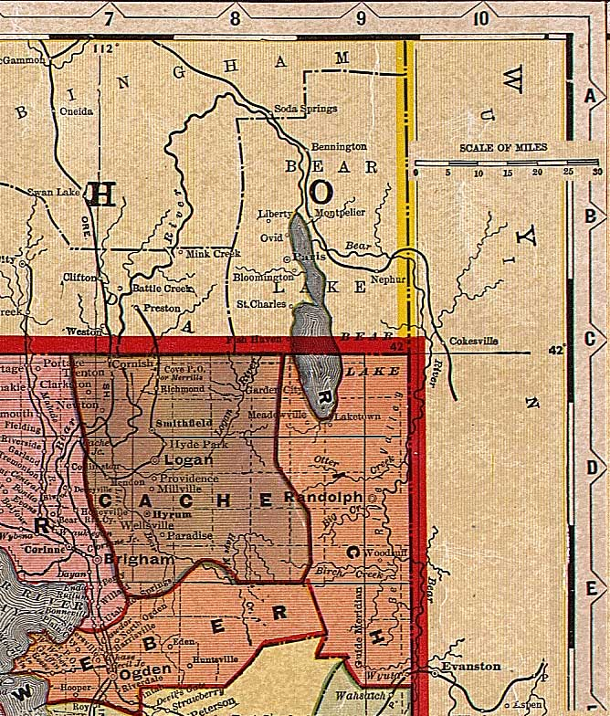

Cache, Rich and Weber Counties, Utah, ca. 1908
From "Deseret Evening News New Home Library Wall Chart" (reprinted with permission)
Idaho
All of Utah
Boxelder
County

Wyoming
Davis and Morgan Counties
Summit County